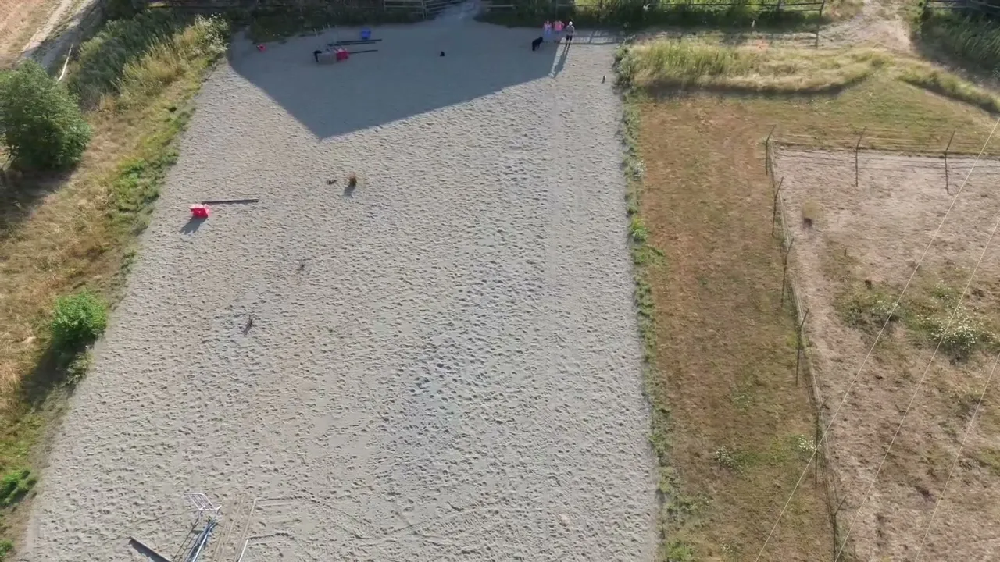
Kalli Sols
Carrières, manèges, ronds de longe et sols de box
Offrez à vos chevaux un sol de travail stable, souple et drainant, construit couche par couche, du terrassement jusqu’à la couche de sable.
- Ouvrages
- Carrière, manège, rond de longe, sols de box
- Méthode
- Terrassement, drainage, sable
- Délai
- 2 à 3 semaines par carrière
- Garantie
- Décennale
Fiche technique
Caractéristiques
Chaque sol se construit couche par couche, selon votre terrain et votre discipline. Les éléments ci-contre sont nos étapes de base, ajustées après l’étude du terrain.
Obtenir une étude gratuite- Terrassement
- Décapage, décaissement et nivellement de la plateforme
- Drainage
- Drains, pente et géotextile selon la nature du terrain
- Fondation
- 30 cm de remblai compacté au minimum, davantage selon le sol
- Couche de travail
- Environ 12 cm de sable équestre, fibres sur demande
- Dimensions courantes
- Carrière de 30 x 50 m le plus souvent, jusqu’à 40 x 80 m ; rond de longe de 18 m de diamètre
- Équipements
- Arrosage par aspersion ou par le dessous (Kalli Subirrigation), éclairage, pare-bottes et clôture
Configurations
5 options au choix
Carrière
L’aire de travail extérieure, de la carrière privée au terrain d’un centre équestre.
Manège
Le bâtiment couvert jusqu’à 20 m de large et son sol, en neuf ou en réfection.
Rond de longe
Une aire circulaire de 18 m de préférence, même sol qu’une carrière, palissade en bois.
Paddocks et circulations
Des sols stabilisés par dalles alvéolées, présentés sur Kalli Dalles.
Box, couloirs et douches
Tapis, matelas et dalles en caoutchouc de Bioret Cheval, que nous revendons et posons.
Sols de box, couloirs et équipements
Box et écurie active
Moins de litière, un couchage plus souple et un sol qui ne glisse pas.
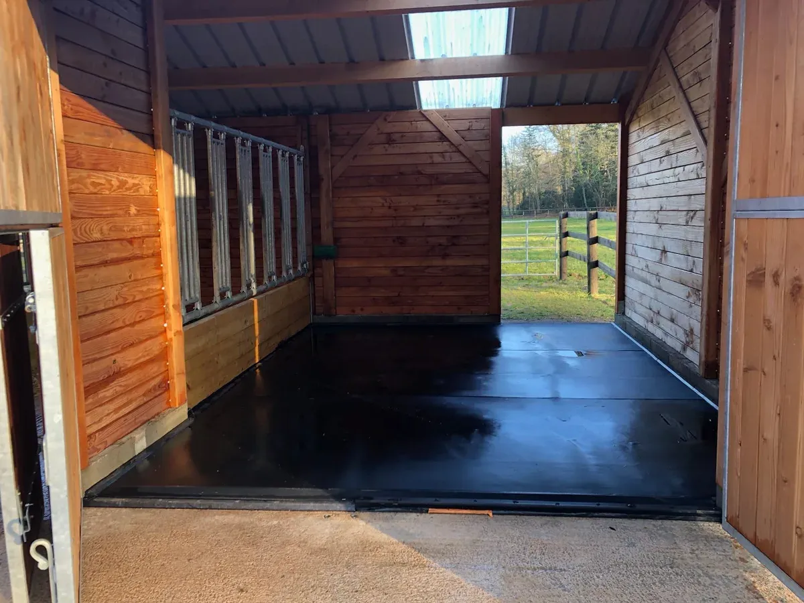
Pégase
Matelas de box sur mesure
- Usage
- Box, box de poulinage et de réveil, clinique, écurie active
- Format
- Matelas sur mesure, posé sur sol béton, 20 kg/m²
- Épaisseur
- 40 mm
- Garantie
- 6 ans
- 85 % de matériaux recyclés
- Jusqu’à 45 % de litière en moins, selon le fabricant
- Lavable au jet haute pression
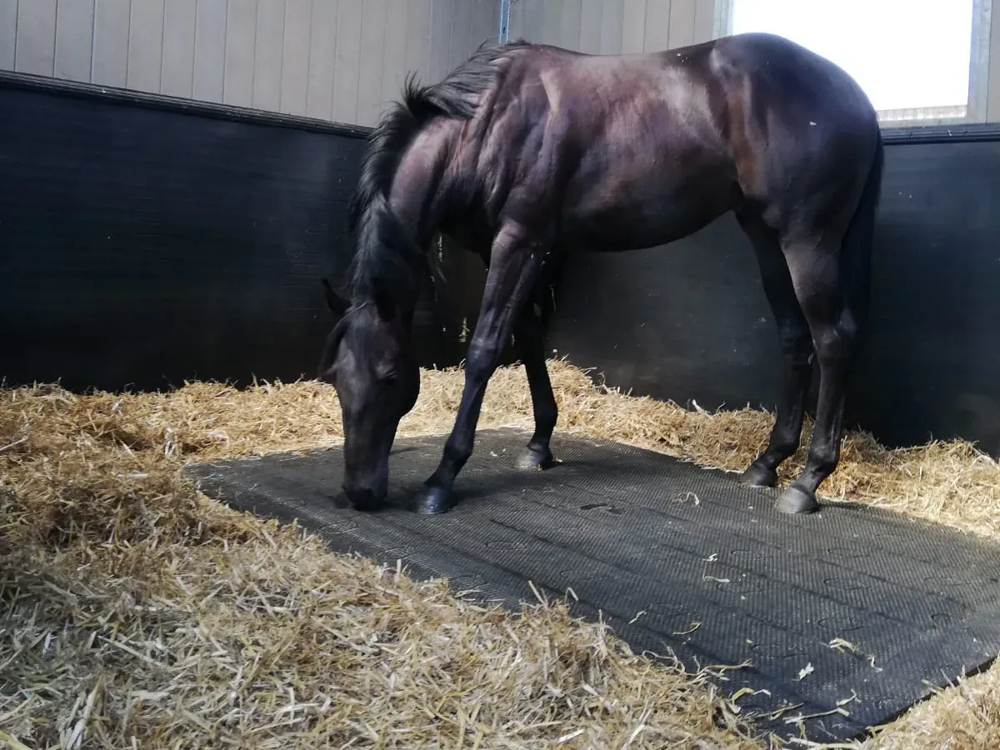
Bubble King
Matelas mobile pour box
- Usage
- Box, écurie active ou paddock, en intérieur comme en extérieur
- Format
- Matelas de 2,40 x 1,80 m, 90 kg
- Épaisseur
- 30 mm
- Garantie
- 6 ans
- Posé au sol sans fixation, déplaçable
- Caoutchouc à bulles entre 2 toiles polyester
- Antidérapant, moins de litière
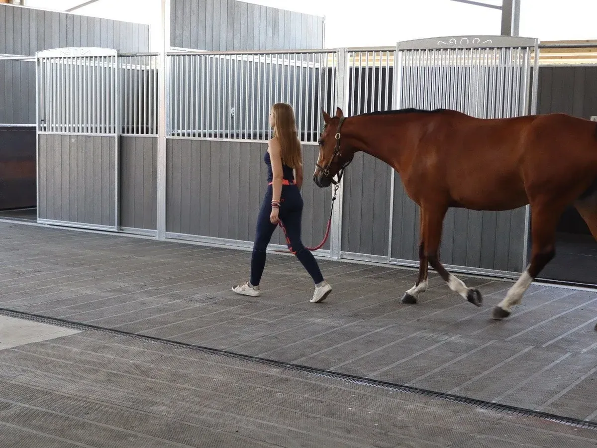
Major
Tapis de box et de couloir
- Usage
- Box, aire de pansage et couloir, en intérieur
- Format
- Rouleau de 3,50 m de large, jusqu’à 30 m de long, environ 19 kg/m²
- Épaisseur
- 14 mm
- Garantie
- 6 ans
- Antidérapant
- 35 % de litière en moins, selon le fabricant
- Supporte le passage d’engins légers
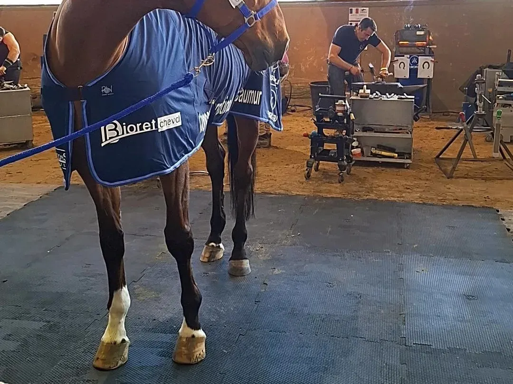
Novea
Dalle puzzle réversible
- Usage
- Box, allée, aire de pansage et zone extérieure
- Format
- Dalle de 1,15 x 0,75 m
- Épaisseur
- 22 mm
- Garantie
- 6 ans
- Caoutchouc vulcanisé fabriqué en France
- 2 faces au choix, motif Delta Diam ou écaille de tortue
- Pose sans colle sur tout type de sol
Couloirs, aires de pansage et douches
Des revêtements antidérapants pour les zones de passage et les zones mouillées.
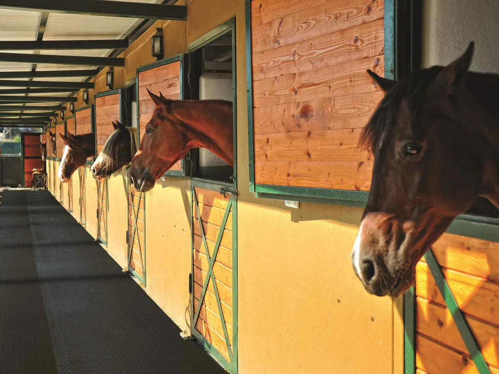
Delta Diam 8
Tapis antidérapant en rouleau
- Usage
- Couloir, douche, van et camion, en intérieur comme en extérieur
- Format
- Rouleau sur mesure de 1,20, 1,50 ou 2 m de large, 9 kg/m²
- Épaisseur
- 8 mm
- Garantie
- 6 ans
- Peu de jonctions, les jus ne passent pas dessous
- Évite la marche directe sur le béton
- Facile à nettoyer
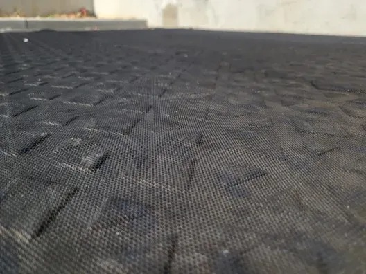
Polymat
Revêtement antidérapant
- Usage
- Aire de pansage, couloir, box temporaire et douche
- Format
- Rouleau sur mesure à armature textile, bords en pente
- Épaisseur
- 16 mm
- Garantie
- 6 ans
- Livré prêt à poser
- Supporte le jet haute pression et les produits nettoyants
- Antidérapant
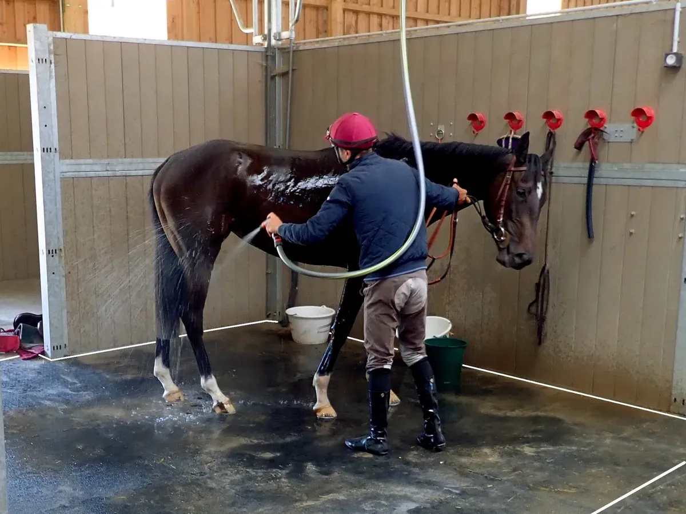
Apollon
Dalle de douche
- Usage
- Douche
- Format
- Dalle puzzle de 1 x 1 m, 19 kg/m²
- Épaisseur
- 17 mm
- Garantie
- 6 ans
- Plots sous la dalle pour l’écoulement de l’eau
- Assemblage en puzzle
- Limite les glissades et le bruit
Concours
Le confort du box de l’écurie, emporté en déplacement.
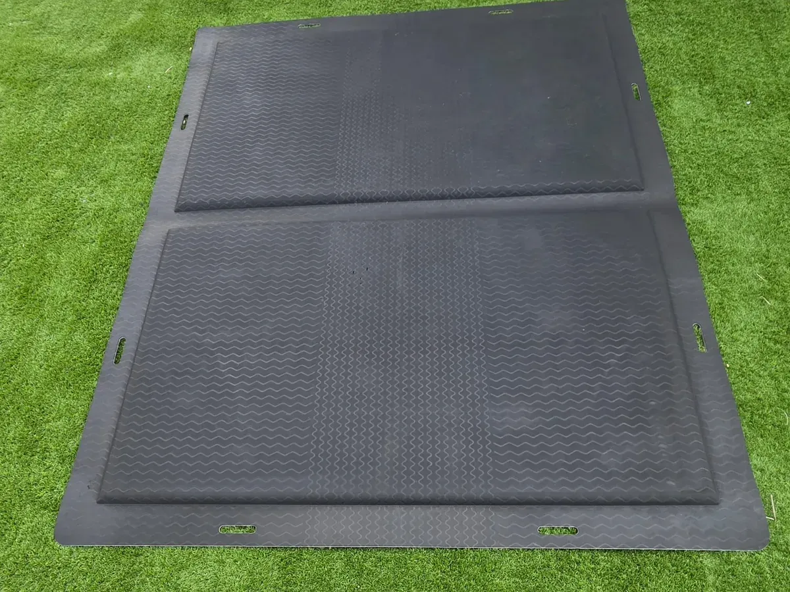
Equifold
Matelas de concours pliable
- Usage
- Box de concours et box temporaire
- Format
- Matelas de 2,40 x 1,80 m plié en 2 (1,80 x 1,20 m), 34 kg
- Épaisseur
- 27 mm
- Garantie
- 6 ans
- Moins de litière à emporter en concours
- Se plie en 2 pour le transport
- Bords en pente pour l’écoulement des jus
Équipements et protections
Pour compléter le box, l’abri ou le manège.
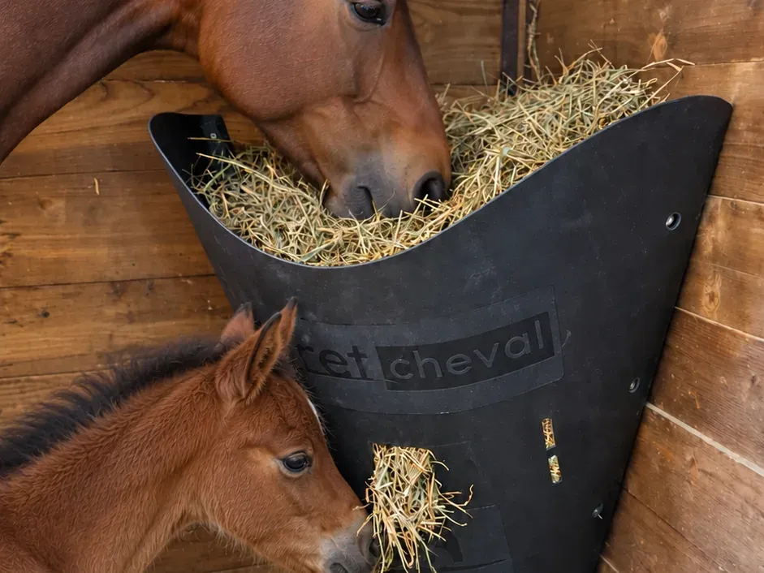
Flexi Mangeoire
Mangeoire souple
- Usage
- Box
- Format
- 1,50 x 1,24 m, 15 kg
- Épaisseur
- 6 mm
- Garantie
- 6 ans
- Posée sans visserie
- Garde le foin hors de la litière
- Environ 34 % de foin perdu en moins, selon des utilisateurs
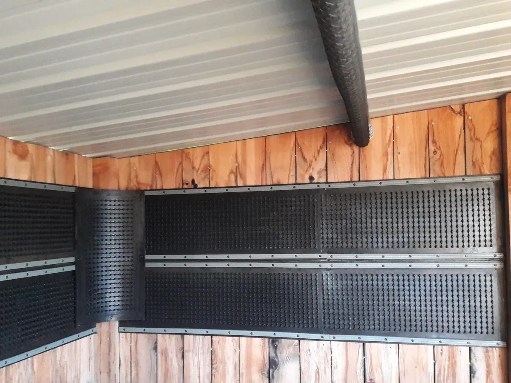
Grat’o Gratte
Station de grattage
- Usage
- Murs d’abri ou de box
- Format
- Panneau de 1,50 x 0,50 m, à poser à la verticale ou à l’horizontale
- Épaisseur
- 32 mm
- Garantie
- 2 ans
- Répond au besoin naturel de grattage
- Évite les blessures contre le béton et le métal
- Classement au feu M3
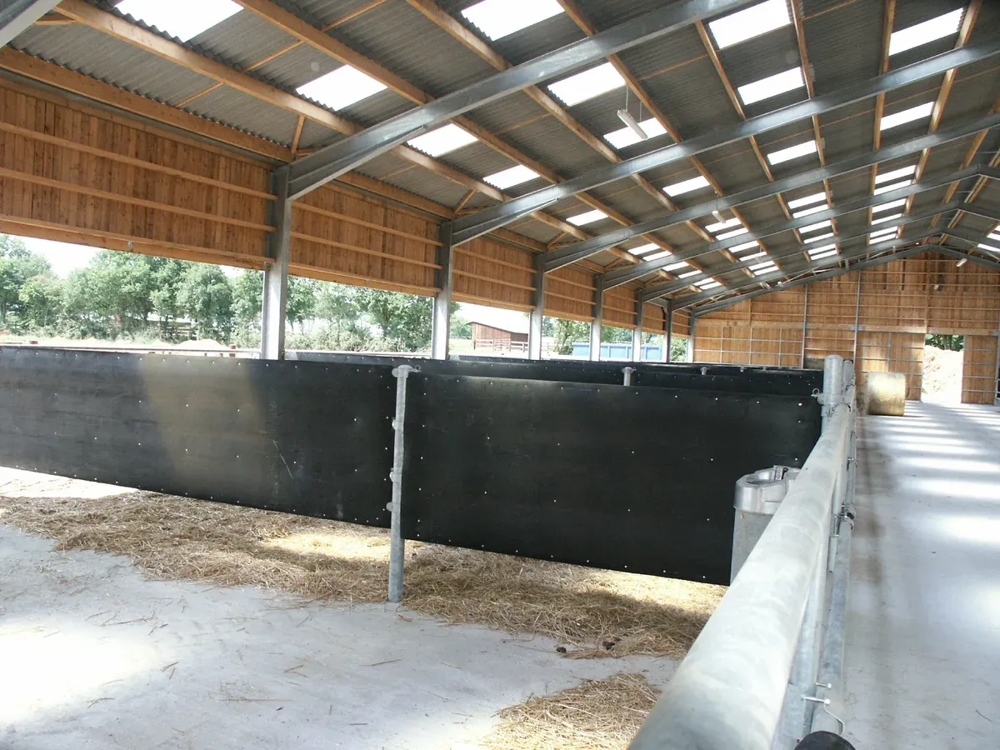
Capitonnage Réemploi
Protection murale
- Usage
- Murs et parois, en intérieur comme en extérieur
- Format
- Rouleau sur mesure de 0,75 ou 2 m de large, selon le stock
- Épaisseur
- 15 à 25 mm
- Garantie
- 6 ans
- Caoutchouc recyclé
- Grandes longueurs, peu de jonctions
- Protège les chevaux et les parois
Ces produits sont fabriqués en France par notre partenaire Bioret Cheval. Nous revendons et posons toute sa gamme, du matelas de box au capitonnage. Caractéristiques et garanties selon le fabricant, prix sur devis.
Voir le site de Bioret ChevalDéroulement
De l'étude à la livraison
Étude du terrain
Nature du sol, pente, écoulement des eaux et usage prévu.
Terrassement
Décapage, décaissement et nivellement de la plateforme.
Drainage et fondation
Évacuation de l’eau selon le terrain, puis au moins 30 cm de remblai compacté.
Couche de travail
Environ 12 cm de sable équestre, réglé avant la première séance, 2 à 3 semaines après le début du chantier.
En vidéo
Nos chantiers filmés
En images
Nos réalisations
Un bon sol se construit par le dessous
La qualité d'une carrière ne se voit pas : elle tient à ce qui se trouve sous le sable. Un terrain mal drainé garde l'eau, la couche de travail se mélange à la terre et le sol devient glissant ou trop dur. Nous commençons donc par étudier le terrain et l'écoulement des eaux, puis nous construisons la plateforme couche par couche : terrassement, drainage adapté au terrain, au moins 30 cm de remblai compacté, et enfin environ 12 cm de sable équestre. Le sable est choisi région par région, selon les carrières les plus proches, et peut recevoir des fibres à votre demande.
Nos chantiers de sols
En 2026, nous avons terrassé 3 000 m² en Seine-et-Marne pour une carrière et une écurie active, et 2 000 m² à Chavenay pour un projet clé en main qui comprend une carrière de 30 x 50 m. Nous réalisons aussi des réfections de sols de manège, comme à Saint-Germain-en-Laye en 2022 (décaissement, nivellement, reprise des pentes et sable de Fontainebleau), et des ronds de longe, comme la rénovation d'un rond de 16 m de diamètre. Pour les paddocks et les aires de circulation, nous posons des dalles stabilisatrices, présentées sur Kalli Dalles.
Questions fréquentes
Tout savoir sur Kalli Sols
Quelle taille pour une carrière ?
La taille la plus demandée est 30 x 50 m. Notre plus grande carrière mesure 40 x 80 m. Nous la dimensionnons selon votre discipline et votre terrain.
Combien de temps dure le chantier ?
Deux à trois semaines pour une carrière, du terrassement à la première séance.
Construisez-vous aussi le manège ?
Oui, nous fabriquons le bâtiment du manège couvert jusqu’à 20 m de large, ainsi que son sol.
Pouvez-vous refaire le sol d’un manège existant ?
Oui. À Saint-Germain-en-Laye, nous avons décaissé et nivelé le sol d’un manège, repris ses pentes, puis posé une nouvelle couche de sable de Fontainebleau.
Faut-il une autorisation pour une carrière ?
Cela dépend de la surface, de l’ampleur des terrassements et du PLU de votre commune. Notre architecte vérifie ces points pour votre terrain.
Quel est le prix d’une carrière ?
Il dépend de la surface, de la nature du terrain et de la couche de travail choisie. Contactez-nous pour un devis gratuit sous 48h.
Posez-vous les tapis et matelas de box ?
Oui. Nous revendons et posons toute la gamme Bioret Cheval : matelas Pégase et Bubble King, tapis Major, dalles Novea et Apollon, rouleaux Delta Diam 8 et Polymat, matelas de concours Equifold, Flexi Mangeoire, Grat’o Gratte et Capitonnage Réemploi.
Quelle garantie pour les sols Bioret ?
6 ans selon les conditions de vente du fabricant, et 2 ans pour la station de grattage Grat’o Gratte.

Un projet de sol équestre ?
Décrivez-nous votre besoin, nous vous répondons sous 48h avec un devis détaillé et gratuit.